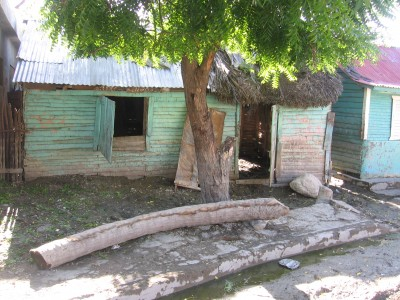
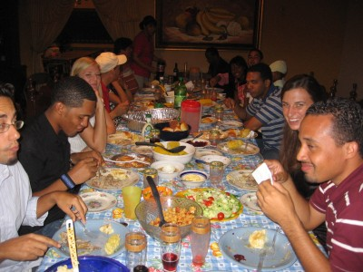
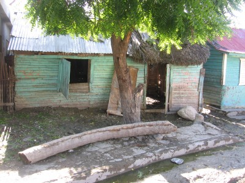
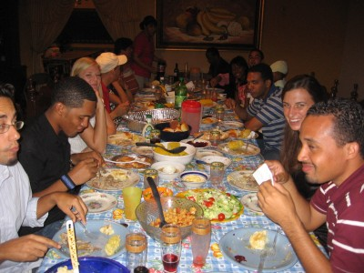

December 1, 2007- Santo Domingo, Dominican Republic-“Detroit with Palm Trees was the way one former co-worker responded when I told him where I was living. Come to think of it, I never thought about it, but yeah that’s about right.Since I left yall last, I have been back to the border region twice but havent had much time to update the website, so I’m going to try to throw together a post right now. On a side note, backpackeracker.com is blowin up! I haven’t figured out how to get the counter on the website yet but I have my own link where I can monitor how many hits per day the site is getting. Let’s just stay if bpa.com was a stock, you’d be buyin. When I go back to the States, I might take a road trip to the Today Show and when Al Roker is interviewing people about stupid things and the weather outside the studio, I’ll jump in front of the camera and scream “backpackeracker.com” then run away. I figure people will go to the site just for the hell of it or out of pure curiosity and badda-bing.When I go to the border, Winston, is my motorcycle driver. He has a new motorcycle that he treasures more than his wife (I think). We were going into one community once and someone told him “be careful, they will steal your bike.” Winston then told me that we (me and him) would fight off any potential thugs because he loved his bike. I told him, forget that, give them if your bike if they want it, it’s not worth dying for, he just laughed at me. Here’s a picture of the great Winston…on a side note…I’m pretty sure that’s not his baby, then again, on second thought…it could be…who the hell knows. Winston told me he lived in NYC for a while I asked him for how long and he said “4 years too long” and I asked him why he didn’t leave then, and he told me the government didn’t want him to….take from that what you will. (he was in jail, for the slow ones…)I went around to different Haitian communities assessing needs, and trying to find a location to put the two emergency water systems donated to us by the American Red Cross. Many of the communities are getting water from Oxfam, Spain’s Red Cross, and the European Union. The people in the community won’t drink the donated water because of the high salt content and the chlorinated taste that has been giving the children certain health problems.Here’s some photos of the destruction…That is 2 feet of mud on the roads still, impassable for any car, which means the water trucks cannot make it through these communities to bring water. Here you can see where the water/mud line was up to on this house…all the way at the window.And the crops have been totally destroyed through out the country by the storm, leaving people out of work and hungry…OK, now that you all know of the severity of the situation, I will update more on Tuesday when I go to Haiti to find a place for the second water system.On to a lighter note…so that not everyone who reads this blog gets downright depressed…Here’s the housekeeper at one of the houses I stay at when I’m in the border area.Her name is Victoria, no english, 65 years old, one tooth. Anyway, I guess the whole “wet willy” thing never made it to the Dominican Republic. scratch that, maybe the ‘willy’ part made it, but the damn ‘wet’ part didn’t. Apparently, victoria had seen someone perform a wet willy on an american comedy show on television. Vicotria, trying to emulate the great USA, gives me a wet willy but forgets to wet her finger before doing so. Her pointy, dry finger is shoved in my ear, and i kid you not, i couldn’t hear jack for an hour out of that ear. she might have jarred an eardrum loose, i have no idea. i wish you all could meet victoria, its an experience in itself.on a side note, she fed me chicken soup and something got caught in my throat. I coughed a few times and out it came, it was the fingernail, claw, whatever you want to call it of a chicken. Developing countries are sweet!Thanksgiving, we had a big dinner with all the staple American foods that the three American girls who live in the house cooked. We had about 20 people, 5 USA, 15 Dominicans. We tried to make them eat stuffing, mashed potatoes, gravy, but all they wanted was rice and turkey.Random Thoughts from the DR…-Babies can’t crawl. The DR is dirty, houses are muddy, there’s rats and stray dogs everywhere. Mothers dont let their babies crawl so none of them know how…There’s a nursery attached to the house that is with the school. One of the babies, Baby Michael is always in the house because his mom’s family lives with us. Baby Michael can’t crawl, you put him on all fours and he just can’t do it, its frustrating to watch, but funny. They learn to walk a lot faster here than in the States. I’ll post a picture of him next week.-When you get in a taxi and tell the driver the destination, it might be an hour before you get there because the taxi driver will stop and pick up anyone else who will fit in the car and take them where they want to go first if it’s closer. You can be rollin 6 deep if the taxi driver wants…-Everyone in Latin America shakes eachothers hands. When you walk into a room of 20 people there’s no waving hello to everyone at the same time, you walk around and shake everyones hand. You can learn a lot about a person’s life by shaking their hand. The way they shake your hand, the way their hand feels, I’ve shaken the hands of Haitians who have worked 30 years cutting sugar cane and you never forget the way that hand feels, ever.I ended up going back to the border region again the following week. Once again, I met up with, of course, Winston. We traveled to a few communities over 80 kilometers away on his motorcycle, I’ve never gone on a 2 hour motorcycle drive sitting 1 inch behind a big Haitian before, and I’m not sure I ever will again. He did block the wind, and made some of his own. Badda bing!We had some downtime, and he took me up this huge mountain on the motorcycle. Well, lets just say I dont think this motorcycle was equipped to take one 250 lb man (him, i aint gainin that much weight) and me (165 lbs) up this damn mountain. We would continually stall out, followed by him laughing and saying, “you walk now.” I would then get off the motorcycle, he would fire it up and fly up the mountain and yell at me from 200 feet away to hurry up. We went to some waterfalls, met some friendly people in a small village. I asked the woman if I could take pictures of her kids, (they were running around in shotty clothes and dishelved hair) She insisted on cleaning them up just for the photo…check out this get-up…Every place we go, we take pictures, with out pictures, who the hell knows where we’d be…With out pictures my website would be just a bunch of meaningless wor—-ok bad example. This woman, Mariana, had three children, she brought them all out of the house cleaned them up, and dressed them up for the picture.She told me she doesn’t have one picture of her children, not one. Imagine taking a trip and not being able to take a picture of it, how would you remember that trip? Now imagine being a parent and not having one picture of your kids when they were little. Shouldn’t every parent in the world, especially those in the third world, where children aren’t guaranteed survival to adulthood, have one photo of their children so that they can look back and recall the innocence and beauty they once posessed? Mariana asked me to one day, maybe next week, maybe next month, maybe in three years, find a way to get a picture of her kids to her. She didn’t want water, she didn’t want money from me, she wants one picture of her children, and this is something backpacker acker can deliver.So to Mariana, when one day, we meet again, I’ve got a picture for ya…From these palm tree-laced streets,backpacker acker
Here you can see where the water/mud line was up to on this house…all the way at the window.And the crops have been totally destroyed through out the country by the storm, leaving people out of work and hungry…OK, now that you all know of the severity of the situation, I will update more on Tuesday when I go to Haiti to find a place for the second water system.On to a lighter note…so that not everyone who reads this blog gets downright depressed…Here’s the housekeeper at one of the houses I stay at when I’m in the border area.Her name is Victoria, no english, 65 years old, one tooth. Anyway, I guess the whole “wet willy” thing never made it to the Dominican Republic. scratch that, maybe the ‘willy’ part made it, but the damn ‘wet’ part didn’t. Apparently, victoria had seen someone perform a wet willy on an american comedy show on television. Vicotria, trying to emulate the great USA, gives me a wet willy but forgets to wet her finger before doing so. Her pointy, dry finger is shoved in my ear, and i kid you not, i couldn’t hear jack for an hour out of that ear. she might have jarred an eardrum loose, i have no idea. i wish you all could meet victoria, its an experience in itself.on a side note, she fed me chicken soup and something got caught in my throat. I coughed a few times and out it came, it was the fingernail, claw, whatever you want to call it of a chicken. Developing countries are sweet!Thanksgiving, we had a big dinner with all the staple American foods that the three American girls who live in the house cooked. We had about 20 people, 5 USA, 15 Dominicans. We tried to make them eat stuffing, mashed potatoes, gravy, but all they wanted was rice and turkey.Random Thoughts from the DR…-Babies can’t crawl. The DR is dirty, houses are muddy, there’s rats and stray dogs everywhere. Mothers dont let their babies crawl so none of them know how…There’s a nursery attached to the house that is with the school. One of the babies, Baby Michael is always in the house because his mom’s family lives with us. Baby Michael can’t crawl, you put him on all fours and he just can’t do it, its frustrating to watch, but funny. They learn to walk a lot faster here than in the States. I’ll post a picture of him next week.-When you get in a taxi and tell the driver the destination, it might be an hour before you get there because the taxi driver will stop and pick up anyone else who will fit in the car and take them where they want to go first if it’s closer. You can be rollin 6 deep if the taxi driver wants…-Everyone in Latin America shakes eachothers hands. When you walk into a room of 20 people there’s no waving hello to everyone at the same time, you walk around and shake everyones hand. You can learn a lot about a person’s life by shaking their hand. The way they shake your hand, the way their hand feels, I’ve shaken the hands of Haitians who have worked 30 years cutting sugar cane and you never forget the way that hand feels, ever.I ended up going back to the border region again the following week. Once again, I met up with, of course, Winston. We traveled to a few communities over 80 kilometers away on his motorcycle, I’ve never gone on a 2 hour motorcycle drive sitting 1 inch behind a big Haitian before, and I’m not sure I ever will again. He did block the wind, and made some of his own. Badda bing!We had some downtime, and he took me up this huge mountain on the motorcycle. Well, lets just say I dont think this motorcycle was equipped to take one 250 lb man (him, i aint gainin that much weight) and me (165 lbs) up this damn mountain. We would continually stall out, followed by him laughing and saying, “you walk now.” I would then get off the motorcycle, he would fire it up and fly up the mountain and yell at me from 200 feet away to hurry up. We went to some waterfalls, met some friendly people in a small village. I asked the woman if I could take pictures of her kids, (they were running around in shotty clothes and dishelved hair) She insisted on cleaning them up just for the photo…check out this get-up…Every place we go, we take pictures, with out pictures, who the hell knows where we’d be…With out pictures my website would be just a bunch of meaningless wor—-ok bad example. This woman, Mariana, had three children, she brought them all out of the house cleaned them up, and dressed them up for the picture.She told me she doesn’t have one picture of her children, not one. Imagine taking a trip and not being able to take a picture of it, how would you remember that trip? Now imagine being a parent and not having one picture of your kids when they were little. Shouldn’t every parent in the world, especially those in the third world, where children aren’t guaranteed survival to adulthood, have one photo of their children so that they can look back and recall the innocence and beauty they once posessed? Mariana asked me to one day, maybe next week, maybe next month, maybe in three years, find a way to get a picture of her kids to her. She didn’t want water, she didn’t want money from me, she wants one picture of her children, and this is something backpacker acker can deliver.So to Mariana, when one day, we meet again, I’ve got a picture for ya…From these palm tree-laced streets,backpacker acker

|
You are using an insecure version of your web browser. Please update your browser!
Using an outdated browser makes your computer unsafe. For a safer, faster, more enjoyable user experience, please update your browser today or try a newer browser.
|
{kind=link}
{kind=link}
{kind=link}
{kind=link}
{kind=link}
{kind=link}
{kind=link}
that my son…is one sweet little story followed by a one sweet little picture..
thank you.
Those pictures are indeed priceless–and so are your entries. Is there a way anybody stateside can print the pics for you and you can give them or send them to this mother? I’ve heard people who go to third world countries are better off w/ a Polaroid–at least that way they can get something tangible right away.
you really have such a way with words. visceral. the thought of a man’s hands after 30 years of cutting sugar cane.
keep writing and…stay safe.
What a great website! And I am not saying this because I know you….but this is exactly what kind of work we all need to be doing, even if it means going out of our “comfort zones”. Keep up this much needed work!
Great stories. Must be cool to wake up everyday knowing that if you choose to, you can make the day of anyone you meet.
Keep makin the kids smile and when Victoria’s sleeping, introduce her to another American classic, the wedgy.
ew